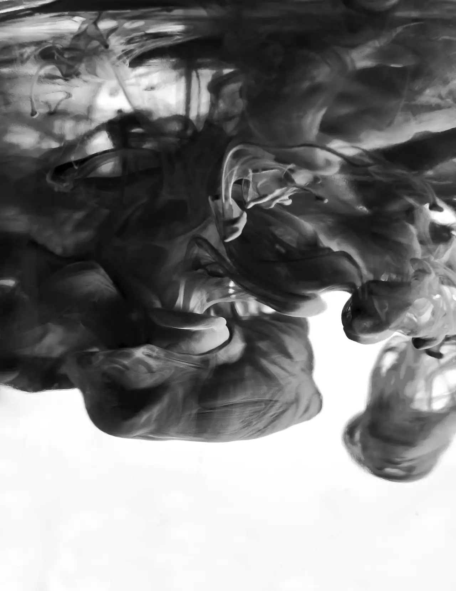
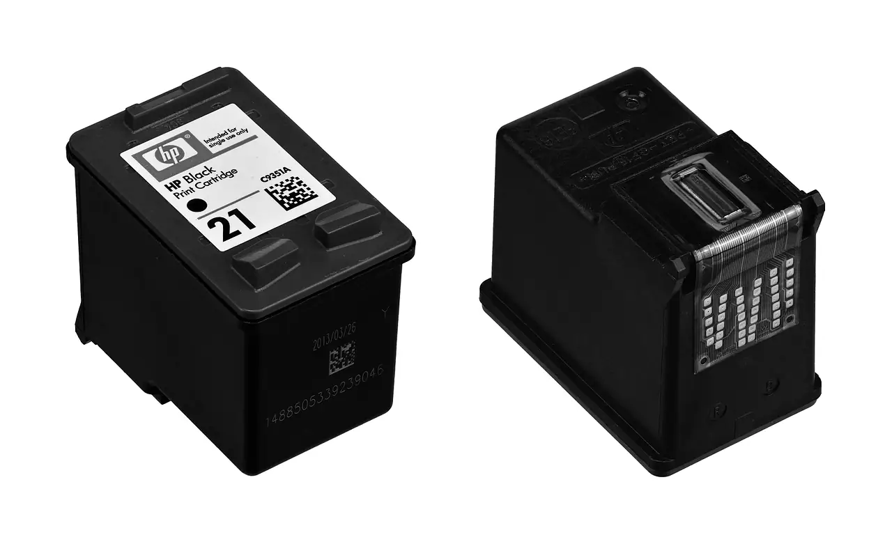
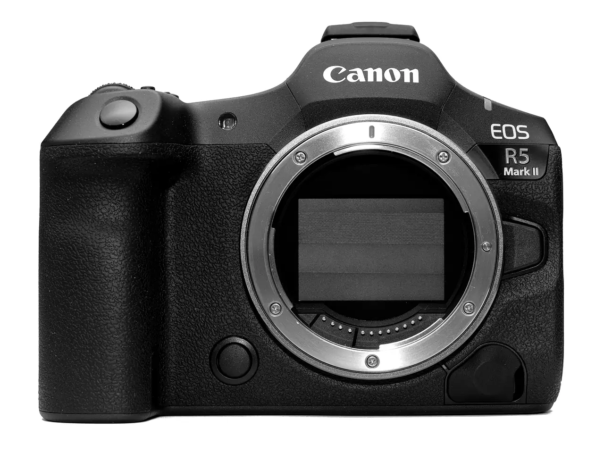
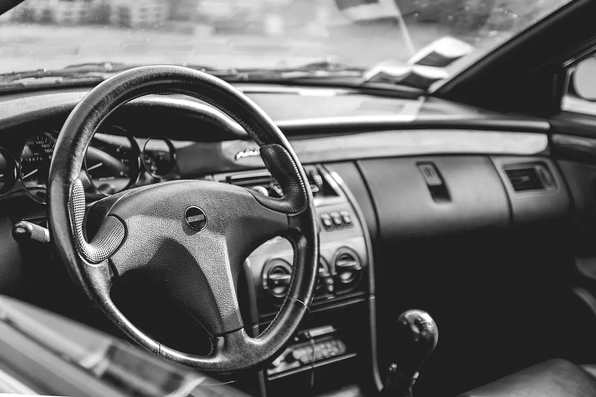
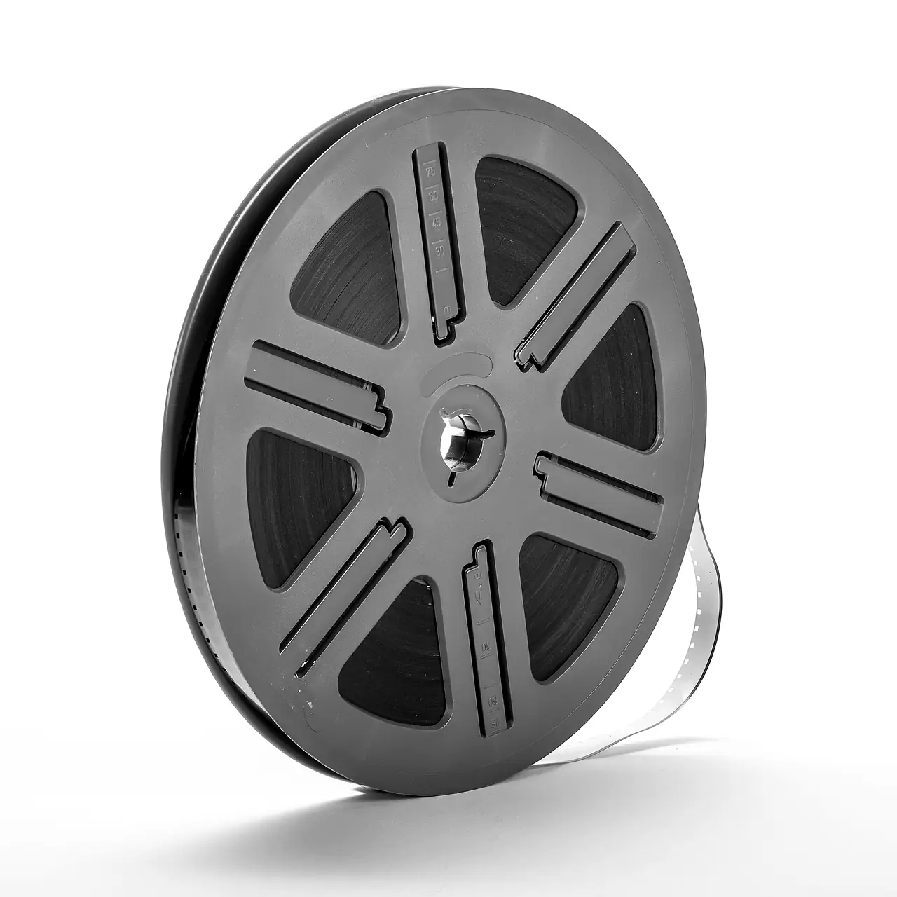

Sinds 2005 · Passage 63 · Waddinxveen
Inkt. Toner. Pasfoto's.
Inktpatronen en lasertoners voor een hele scherpe prijs, bijna altijd goedkoper dan de grote webshops. Verder: pasfoto's en portretten, je rijbewijs digitaal verlengen en oude video's digitaliseren. Al sinds 2005 hier in de Passage.

20 jaar Inkstation€10Portretfoto, ingelijstMa 13:00–17:30 · di–vr 10:00–17:30
Inkt & toner
Inktvoorminder.
Inktpatronen en lasertoners voor een hele scherpe prijs. Vooral setjes zijn hier vaak veel goedkoper dan bij webshops als 123inkt en Printabout. Gewoon in de winkel, zonder verzendkosten.
- InktpatronenLos of als setje met 4 kleuren, voor Epson, Brother, Canon en HP. Neem je lege patroon mee, dan heb je zeker de goede.
- LasertonersZeer voordelig. Vraag vrijblijvend een prijsopgave: het verschil kan flink zijn.
- RefillJe lege Canon- of HP-patroon voordelig laten navullen.
Setjes vaak veel goedkoper dan bij 123inkt en Printabout

Pasfoto's & portretten
Pasfoto's.Ook voorbaby's.
Voor de mooiste pasfoto's ben je hier aan het goede adres. Voor je paspoort, ID-kaart of rijbewijs, en net zo goed voor de baby. Rens neemt er de tijd voor.
- Paspoort & IDVolgens de eisen van de overheid, 35 × 45 mm.
- Baby's & kinderenGewoon welkom, ook als het even niet meezit.
- PortrettenEen mooie foto voor thuis, of digitaal voor LinkedIn en je cv.
20 jaar Inkstation: een portretfoto, ingelijst, voor maar €10. Tijdelijke actie.

Rijbewijs verlengen
Rijbewijsverlengen.Begin hier.
Je rijbewijs veilig digitaal verlengen doen we al jaren. Je foto en handtekening gaan digitaal naar de RDW: geen losse pasfoto en geen eerste afspraak op het gemeentehuis.
- Foto en handtekeningRens maakt je pasfoto en neemt je handtekening digitaal af. Met jouw toestemming gaan ze direct naar de RDW.
- Online aanvragenJe krijgt een aanvraagcode per mail of sms en verlengt online op rdw.nl.
- OphalenNa ongeveer twee werkdagen haal je je nieuwe rijbewijs op bij de gemeente.
Klaar in ongeveer twee werkdagen

Digitaliseren
Oudevideo's?Op USB.
Super 8-films, videobanden, audio en dvd's: Scanpaleis zet ze over op USB of dvd. Je levert alles hier in de winkel in en krijgt het daarna netjes thuisbezorgd.
- InleverenBreng je films, banden of audio naar Inkstation in de Passage.
- DigitaliserenScanpaleis zet alles over naar USB of dvd.
- ThuisbezorgdDaarna krijg je alles netjes thuis bezorgd.
Officieel inleverpunt van Scanpaleis

Verder in de winkel
- Papier
- Fotopapier
- Lamineerhoezen
- USB-sticks
- SD-kaarten
- Printers
DHL-afgiftepunt. Pakket versturen of retourneren? Lever het hier in.
Reviews op Google
Geduldig.Vakman.Top service.
- “De meneer was enorm geduldig en nam alle tijd!” Celina
- “Rens is een vakman.” Peter
- “Ook voor baby's kan je gewoon terecht. Top service.” Naw
- “Een prima zaak, eigenaar denkt mee en een vriendelijke sfeer.” Review op Google
- “Een leuk contact met de fotograaf levert een vele malen betere foto op.” Review op Google
Gemiddeld op Google, uit 110 reviews
Alle reviews lezenPassage 63 · 2741 HB Waddinxveen
Komlangs.
- Maandag
- 13:00 – 17:30
- Dinsdag t/m vrijdag
- 10:00 – 17:30
- Zaterdag en zondag
- Gesloten
inkstation.waddinxveen@gmail.com · Ook DHL-afgiftepunt